Linked Data en el entorno Universitario
Camino hacia las cinco estrellas.
Alioth Rodríguez
Guillermo García Juanes
Tutor: José Luis García Roda
17 de Julio de 2013
Guillermo García Juanes
Tutor: José Luis García Roda
17 de Julio de 2013
Índice
- ¿Qué es Linked Data?
- Problema presentado
- Objetivos
- Solución
- Demostración
- Conclusión
¿Qué es Linked Data?
- Web Semántica
- Definición
- Componentes
- Tecnologías
- Linked Data
- Definición
- Principios básicos
- Open Data
Web Semántica
Definición
Se basa en la publicación de datos que sean entendibles tanto por personas como por máquinas, usando principalmente metadatos.
Web Semántica
Componentes
- URIs
- Lenguaje
- Ontología
- Datos instanciados
- Declaraciones semánticas
Web Semántica
Componentes
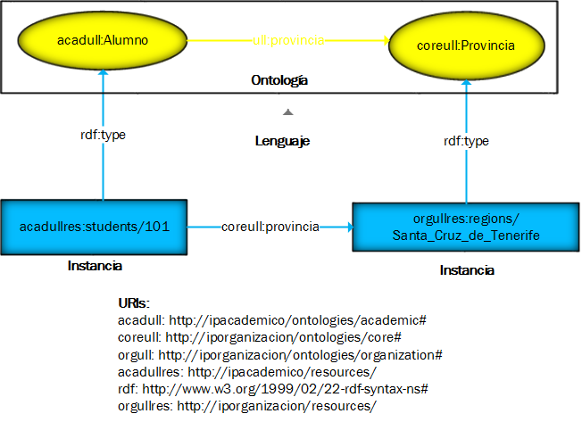Web Semántica
Componentes
Declaraciones semánticas
acadullres:students/101 ull:provincia orgullres:regions/Santa_Cruz_de_Tenerife
acadullres:students/101 rdf:type acadull:Alumno
orgullres:regions/Santa_Cruz_de_Tenerife rdf:type coreull:Provincia
Web Semántica
Tecnologías
- RDF. Formato estándar
- RDF/XML
- Turtle
- N-Triples
- RDF Schema. Permite la creación de clasificaciones
- OWL. Permite la creación de ontologías/vocabularios
- SPARQL. Permite la realización de consultas
Linked Data
Definición
Este término es lo mismo que Web Semántica, con la única característica que alguno de los datos publicados se encuentren referenciados hacia otra fuente de datos.

Linked Data
Principios básicos
- Nombramiento de las cosas por URIs
- Minting HTTP URIs
Dominio propio evitando duplicidad - Meaningful URI
http://www.example.org/pais#España vs http://www.example.org/123#aa - Cool URIs
Independientes por formatos e invariables. - Creación de Dereferenceable URIs
- 303 URIs
http://dominio/resources/TEA -> ../TEA.rdf o ../TEA.html (según cabecera HTTP) - Hash URIs
http://dominio/resources#TEA - Proveer información a partir de estándares (RDF, RDFS, OWL)
- Incluir enlaces a otras fuentes de datos
Linked Data
Open Data
- ★ PDF, etc.
- ★ ★ Excel
- ★ ★ ★ CSV, JSON, XML, etc.
- ★ ★ ★ ★ RDF y SPARQL
- ★ ★ ★ ★ ★ Linked Data
Problema presentado
- Situación Actual
- Problemática
Situación Actual
- Aplicación ERP de gestión universitaria aportada por terceros
- Gran cantidad de información
- Base de datos:
- Distribuida
- Disgregada
- Compleja
- Sin poder modificarla
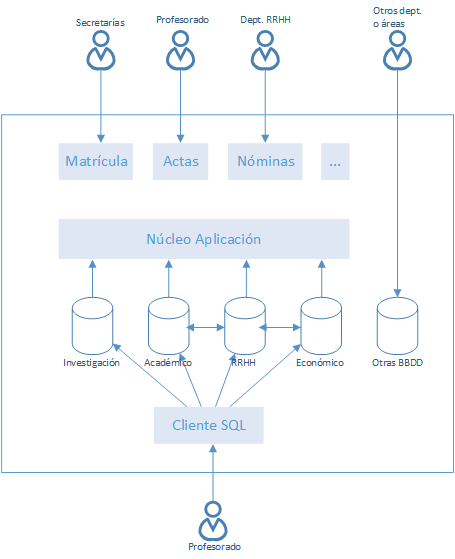
Problemática
- Sobrecarga del Gabinete de Planificación ULL
- Modelo dificil de comprender
- Obtener información es muy costoso
- Información no normalizada
- La información está, ¿dónde? No se sabe
¿Es Linked Data la solución?
Objetivos
- Implementar plataforma web Open Data - Linked Data
- Reducir la complejidad para realizar consultas
- Evitar el problema de bases de datos distribuidas
- Promover filosofías de Transparencia y Open Government
Metodología usada
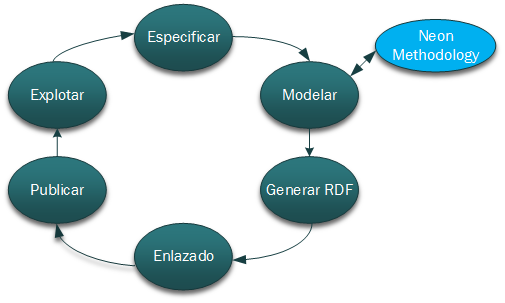Especificación de la información
- Fuentes de datos independientes
- De interés
- Teniendo en cuenta LOPD
- Cumplen los principios de Linked Data
Organización
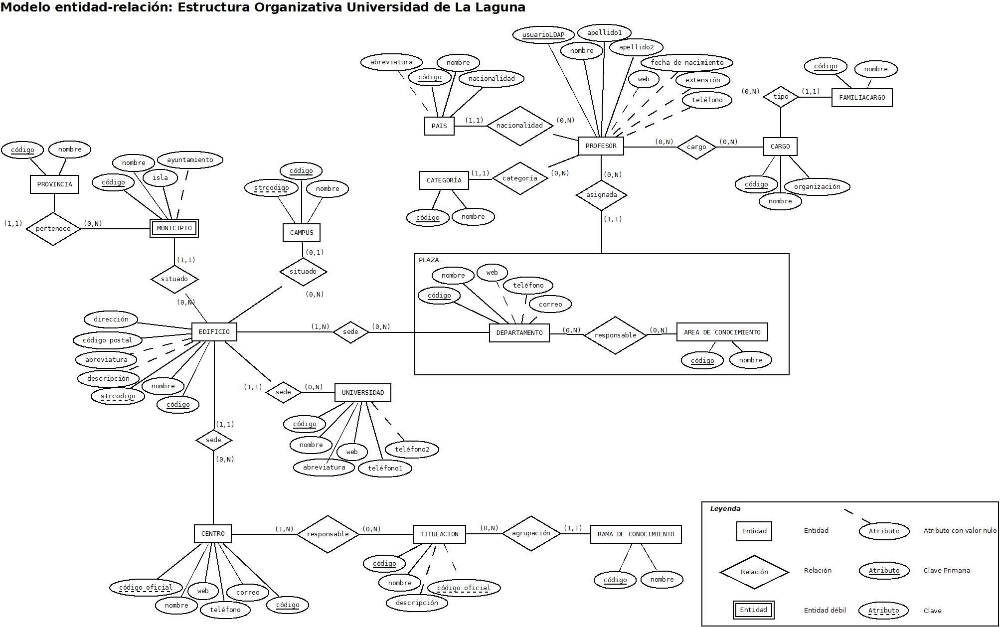Académico
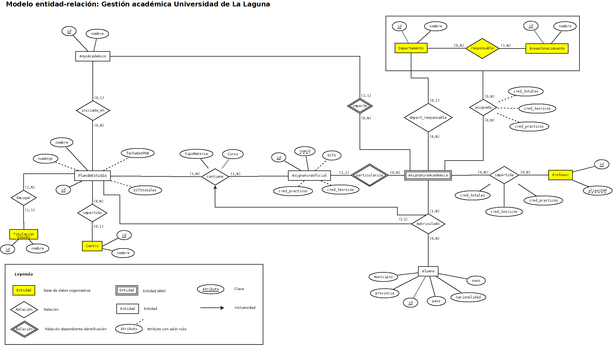Modelado
Decisión tomada
- La creación de una ontología
- Basada en NeOn Methology, y en concreto:
- Reusar
- Reingeniería
- Modular
Ontología
Justificación
- Dividir en tres secciones
(core, académica y organizativa) - Permitir manejar un dominio propio
- Alinear con otras ontologías
Ontología
Dominio modelado
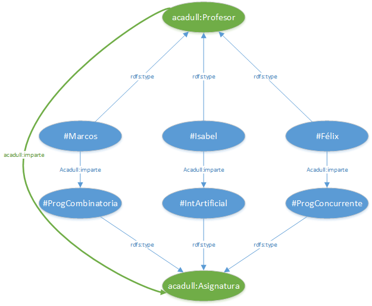Ontología
Alineado
- Friend of a Friend project
relación entre agentes (personas/organizaciones - Academic Institution Internal Structure Ontology
organización académica - Teaching Core Vocabulary:
quien enseña que - Buildings and Rooms Vocabulary
edificios, campus y sedes - Organization Ontology
organizaciones y cargos - Vocabulario de Localizaciones
direcciones, situación geográfica - Simple Knowledge Organization System
clasificación e identificación
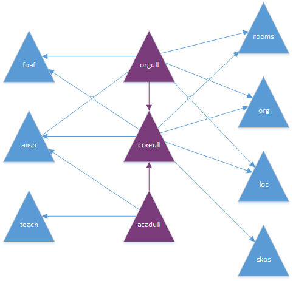
Publicar la información
Tecnologías a usar
Distribuidas (2 Servidores)
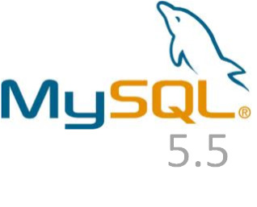
Publicar la información
BBDD: Organización
- Preparación para enlazado externo
Tabla Linked
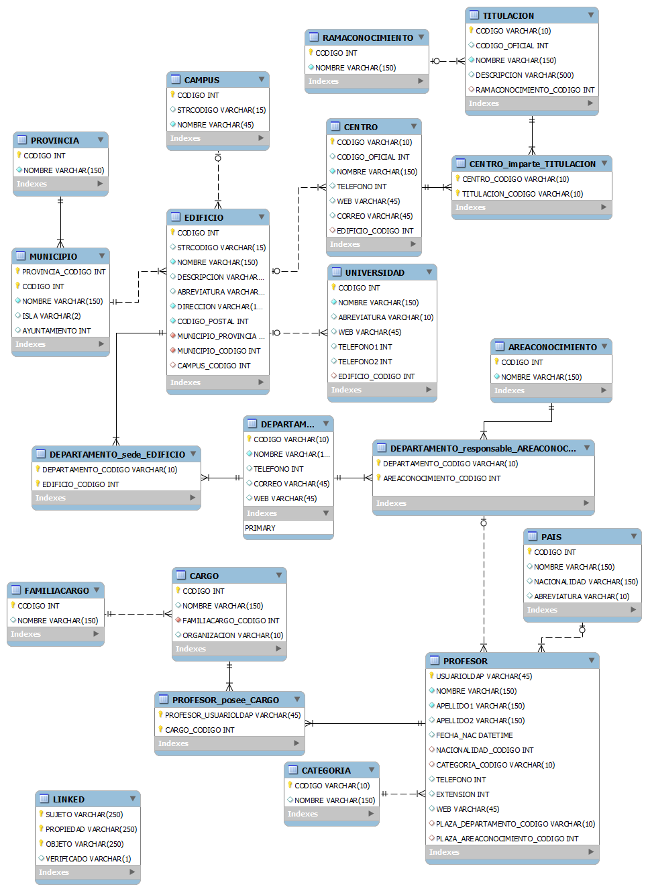
Publicar la información
BBDD: Académica
- Información BBDD Organizativa
Motor de almacenamiento FEDERATED - Preparación para enlazado directo
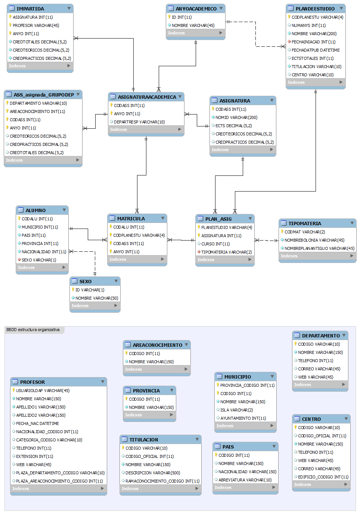
Publicar la información
D2R
- Creado por Chris Bizer
- Archivo de mapeo de la BBDD
D2RQ Mapping File - Turtle - Interfaz Web basada en Pubby
- EndPoint SPARQL
Publicar la información
Implementación: Organización
Publicar la información
Implementación: Académica
Enlazado
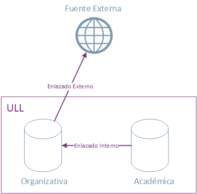
- Enlazado Interno
- URIs Predefinidas
- Enlazado Externo
- Tabla Linked
Enlazado Externo
Proceso
- Entradas
- Recursos
- Fichero LSL
- Pasos
- Filtrar Fuentes
- Matching
- Insertar en la base de datos
- Republicar
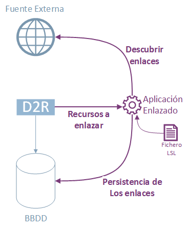
Enlazado Externo
Recursos Enlazados
- Datos Geograficos
- Paises
- Provincias
- Municipios
- Localidades
- Institución
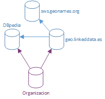
orgull:countries/FRANCIA owl:sameAs dbpedia:Francia
orgull:localities/Santa_Cruz_de_Tenerife owl:sameAs
geolinkeddataes:Provincia/Santa%20Cruz%20de%20Tenerife
Explotación
- Endpoint SPARQL
- Fuseki
- Basado en Apache Jena
- Interfaz web
- Consultas SPARQL enriquecidas
- Consultas distribuidas
- Funciones aritméticas
- Funciones de agregación
Demostración
Cantidad de profesores por departamentoConsulta en SQL
SELECT DEP.NOMBRE as Nombre, COUNT(PRO.USUARIOLDAP) as Profesores
FROM DEPARTAMENTO DEP, PROFESOR PRO
WHERE DEP.CODIGO = PRO.PLAZA_DEPARTAMENTO_CODIGO
GROUP BY DEP.CODIGO
ORDER BY DEP.NOMBRE;
Consulta en SPARQL
PREFIX coreull: < http://orgull/ontologies/core# >
PREFIX orgull: < http://orgull/ontologies/organization# >
SELECT ?NombreDept (COUNT(?profesor) as ?NumeroProfesores) WHERE {
SERVICE < http://orgull/sparql > {
?profesor orgull:miembro ?dept .
?dept coreull:nombre ?NombreDept .
}
} GROUP BY ?NombreDept
ORDER BY ?NombreDept
Demostración
Número de veces que un departamento se vincula con una asignatura (según el profesorado)Consulta en SQL
SELECT PROF.USUARIOLDAP as Profesor, DEP.CODIGO as Departamento
FROM DEPARTAMENTO DEP, PROFESOR PROF
WHERE PROF.PLAZA_DEPARTAMENTO_CODIGO = DEP.CODIGO;
SELECT Profesor, COUNT(ASIGNATURA) as NumeroPlanificaciones
FROM IMPARTIDA IMP
GROUP BY IMP.PROFESOR
Consulta en SPARQL
SELECT ?NombreDept (COUNT(?planificacion) as ?numeroPlanicaciones)
WHERE {
SERVICE < http://orgull/sparql > {
?profesor orgull:miembro ?dept .
?dept coreull:nombre ?NombreDept .
}
SERVICE < http://acadull/sparql > {
?planificacion acaull:tieneProfesor ?profesor .
}
} GROUP BY ?NombreDept
ORDER BY ?NombreDept
Demostración
Distribución de alumnos por provincias y su geolocalización para mostrarlo en un mapaConsulta en SPARQL
SELECT ?Provincia (COUNT(?alumno) as ?numeroAlumnos) ?geolocalizacion
WHERE {
SERVICE < http://acadull/sparql > {
?alumno a acaull:Alumno;
coreull:provincia ?prov .
}
SERVICE < http://orgull/sparql > {
?prov coreull:nombre ?Provincia ;
owl:sameAs ?linked .
}
SERVICE < http://dbpedia.org/sparql > {
?linked geo:lat ?geolocalizacion .
}
} GROUP BY ?Provincia
Aplicaciones
- Guía con los edificiones, campus, facultades, etc. geolocalizados en un mapa
- Una aplicación para auto-generar guias docentes
- Portal estádistico (mostrando gráficas, mapas, informes, etc.)
- Portal informátivo sobre transportes y lugares universitarios (paradas, horarios, etc.)
Conclusiones
- Sector falto de madurez
- Necesario un completo análisis de datos inicial
- Complejidad en la creación de ontologías
- Faltan complementos para las herramientas base
- Realización de consultas desde diferentes datasets del mundo
¿Esta solución es aplicable?
Sí, pero ...
- No sustituiría al sistema actual
- Sería un gran paso para Gobierno Abierto
Gracias por su atención
Linked Data en el entorno Universitario
Camino hacia las cinco estrellas.
Alioth Rodríguez
Guillermo García Juanes
Tutor: José Luis García Roda
17 de Julio de 2013
Guillermo García Juanes
Tutor: José Luis García Roda
17 de Julio de 2013